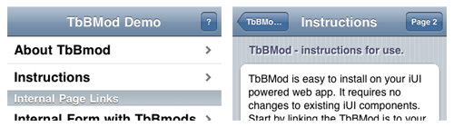

TbBMod - Toolbar Buttons Management

TbBMod.js is an extension for the iUI framework. It was designed to offer some flexibility to some of the default behaviors of iUI, namely page context controlling of toolbar button behavior. In short it gives you the flexibility to control what the toolbar buttons do on a per page basis.
Special Thanks to all in the iUI dev community. Without you this extension may not exist. It is my pleasure to share freely with everyone. Stay tuned to the iphonewebdev and iui-developers googlegroups for updates as I am currently working to add the ability to mod the back button on demand.
Author: Vic Hudson
Version: 1.0
- Getting Started
- Frequently Asked Questions
- iUI code documentation
- Advanced styling & themes
Like in most open-source projects, the more we are, the meyer it is! HTML/CSS/JS, documentation, design, translation, ...
Don’t be shy
1. Instructions for use
TbBMod is easy to install on your iUI powered web app. It requires no changes to existing iUI components. Start by linking the TbBMod.js to your main index file just like the you would iui.js. Next make sure your right toolbar button has a unique id attribute, and links to some generic page for the pages you don't mod it on. Installation is now done!
The rest is done by setting some flags in the pages you want to mod buttons for. The flags are pretty simple to use and there are currently three different options to use on your button. You may hide the button, change the buttons text, and change the buttons link address all on a per page basis. The flags used are hidden form fields on your page. If the page you need to mod the button on is, or already has, a form just add the hidden inputs to it. If it is a list or static panel just add a form with the hidden inputs to the end of your page(just before your closing ul or div tag).
The key is in the naming of the form inputs and their value. The standard naming convention is TbBMod followed by the mod option you want then an underscore followed by the id of the button to mod. This example changes the link of a button with id = "help" to page2help.html
<form>
<input type="hidden" name="TbBModHREF_help" value="help2.html" />
</form>
Since it is my "?" button above and would serve to deliver help info about the current page I don't really want to change it's text label most of the time, but on the current page for example it changes to a "How" button linking to explanation of how the extension works. It is done like this.
<form>
<input type="hidden" name="TbBModTEXT_help" value="How" />
<input type="hidden" name="TbBModHREF_help" value="how.html" />
</form>